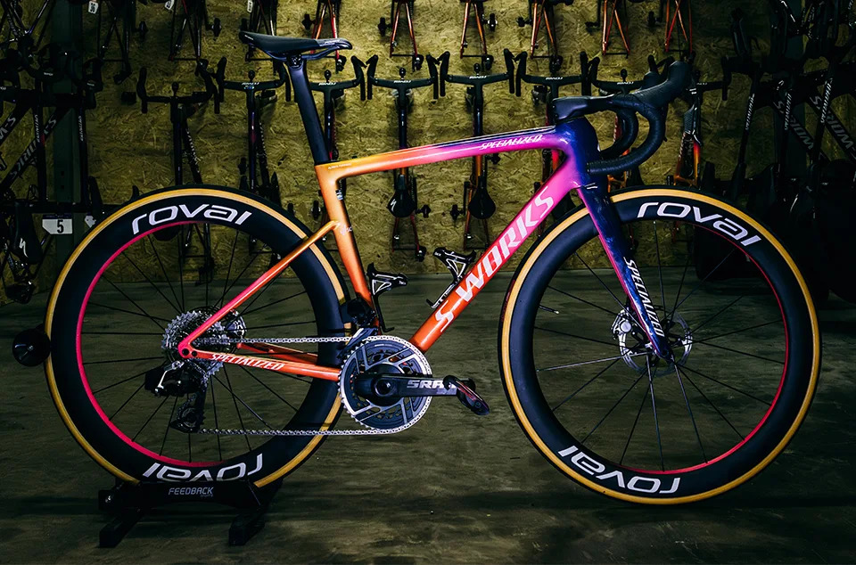

Le bici più costose al mondo
Carbonio, titanio e design da gioielleria: alcune bici superano i 20.000€ grazie a materiali hi-tech e componenti esclusivi.
Approfondisci
Le superstizioni più strane del gruppo
Calzini sempre uguali, scarpe allacciate nello stesso ordine o numeri fortunati: la scaramanzia è parte della cultura ciclistica.
Approfondisci
Come diventare ciclista professionista
Dalle categorie giovanili ai contratti WorldTour: tutte le tappe per arrivare nel ciclismo che conta.
Approfondisci